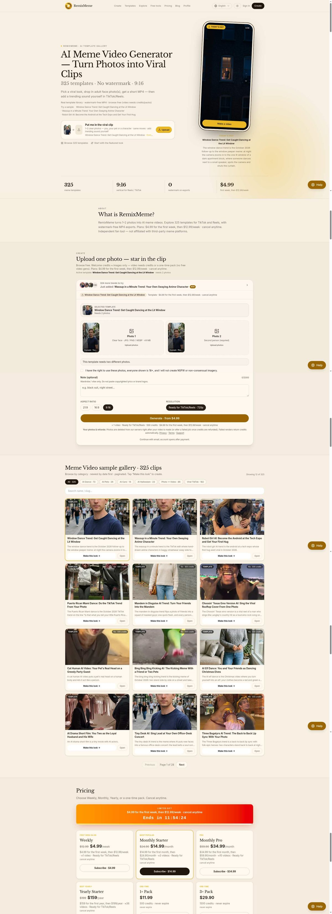
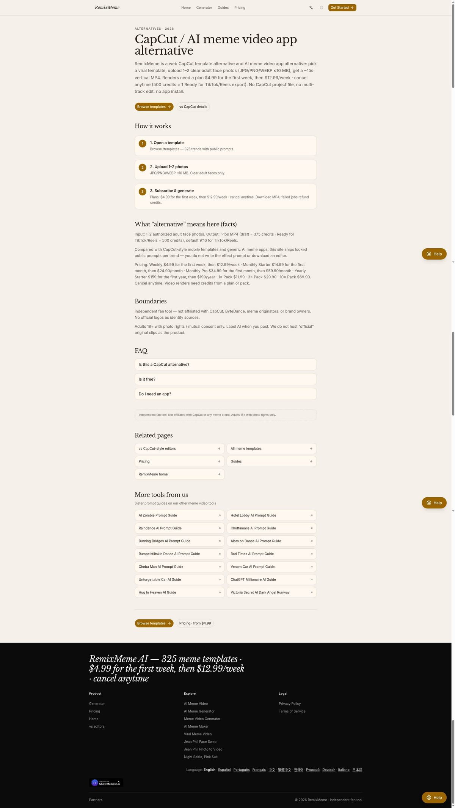
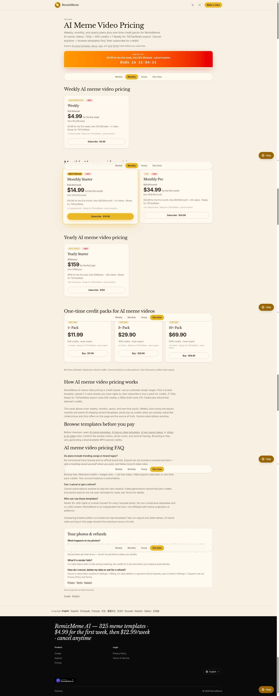

现在「AI 做梗」产品很多：有的是表情包静图，有的是开放式文生视频，有的是剪辑 App 里塞一个 AI 按钮。它们看起来都在解决「做热梗」，实际差得远。本文把 RemixMeme（https://remixmeme.com） 和「通用 AI 视频 / 泛 AI 梗 App」放在同一张表里比，帮你少踩选型坑。

先分清三类产品
| 类型 | 代表能力 | 你要付出的 | 典型痛点 |
|---|---|---|---|
| 剪辑器（CapCut 类） | 时间线、字幕、模板替换 | 剪辑时间 | 学成本、出片慢 |
| 通用 AI 视频 / 泛梗 App | 文生视频、自由提示词、多风格 | 提示词工程 + 抽卡 | 不稳定、不像「平台热梗语感」 |
| 锁定模板梗视频（RemixMeme） | 约 325 个公开提示锁定模板；1～2 张脸 → ~15s 9:16 | 选模板 + 积分/订阅 | 自由度低于开放式模型 |
RemixMeme 明确站在第三类：把「热梗怎么演」锁进模板，而不是让你从零描述整个世界。

锁定趋势语法 vs 自由提示词：核心分歧
通用 AI 视频：自由，但「梗感」要自己找
开放式工具很香的一点是：你可以写任何场景——赛博城市、古风、科幻分镜。代价也很真实：
- 同一提示词，成片方差大；
- 「看起来像 TikTok 正在转的梗」这件事，往往要自己总结镜头语言；
- 竖屏、脸部一致性、15 秒节奏，常常还要二次剪辑。
适合：探索向创作、概念片、不依赖某一固定梗语法的内容。
RemixMeme：窄，但「热梗语法」现成
RemixMeme 不追求「宇宙模拟器」，而是：
- 输入 1～2 张成人脸照片；
- 走 锁定 meme 模板（约 325 个，公开提示）；
- 输出默认约 15 秒、9:16 的 MP4，面向 TikTok / Reels；
- 浏览器完成，导出 无水印；
- 音频侧给 AI ambient / 原创氛围音；热门原曲自行在平台添加（无商用曲库授权承诺）。
一句话：你换的是「哪一套已验证的梗语法」，不是「从零发明一种视频语言」。

官网对比与选型页：https://remixmeme.com/alternatives 、https://remixmeme.com/vs-capcut
功能对照（选型用）
| 维度 | 通用 AI 视频 / 泛 AI 梗 App | RemixMeme |
|---|---|---|
| 提示方式 | 多为自由文本 / 多模态随意描述 | 锁定模板 + 人脸照片 |
| 输出形态 | 时长、画幅、风格常需自己约束 | 默认 ~15s、9:16 |
| 学习曲线 | 提示词与参数 | 选模板为主 |
| 水印 | 因产品而异 | 导出无水印 |
| 安装 | App 或网页都有 | 仅网页 |
| 价格逻辑 | 订阅 / 积分 / 算力额度不一 | 周/月/年 + 积分包，规则公开 |
| 最佳用途 | 开放创意、概念探索 | 热梗脸短视频量产试错 |
价格与试用：别只看「有没有免费」
通用 AI 套件常打「每日免费次数」；RemixMeme 则是：
- 浏览免费；
- 新账号约 20 欢迎积分 ≈ 2 张图；
- 视频需要计划或积分包；
- 周订：首周 $4.99 → $12.99/周；
- Monthly Starter：$14.99 → $24.90/月（约 3 条）；
- Monthly Pro：$34.99 → $59.90/月（约 10 条）；
- Yearly Starter：$159 → $199/年（约 36 条）；
- 一次性包：$11.99 / $29.90 / $69.90；
- 720p Ready = 500 积分，草稿约 375，失败退积分，可随时取消。
详询：https://remixmeme.com/pricing

选型提醒：免费额度适合「验证能不能做出你要的那种脸部梗感」；真正比较时，请把 稳定出片成本（积分/条、是否含水印、是否还要二次剪辑）算进去。
谁该选 RemixMeme？谁该选通用 AI？
更偏向 RemixMeme：
- 内容形式固定为「人脸进热梗模板」的竖屏短视频；
- 想减少提示词抽卡，优先要「像平台在传的梗」；
- 需要无水印、网页即开即用；
- 能接受锁定模板带来的边界（不是任意分镜）。
更偏向通用 AI 视频：
- 要开放世界观、复杂运镜、非人脸主体；
- 愿意写长提示词、接受高方差；
- 成片还要进剪辑器深度二次创作。
两者也可以组合：用 RemixMeme 快速出梗脸母带，再用剪辑器加字幕/卡点——但若你本来就不碰时间线，单用 RemixMeme 往往就够试水。
合规提醒（两类工具都适用，这里写死）
- RemixMeme 是 独立粉丝向工具，与 CapCut / ByteDance / 梗品牌无关；
- 18+；照片须授权与同意；
- 发布请 标注 AI；
- 勿把「AI 氛围音」理解成「已获热门原曲商用授权」。
FAQ
Q1：RemixMeme 是文生视频吗？
不是典型的开放式文生视频。它是「锁定梗模板 + 人脸照片 → 短视频」。
Q2：和 AI 表情包 App 有什么不同？
表情包多为静图或简单动图；RemixMeme 面向约 15 秒竖屏 MP4 热梗视频。
Q3：模板会不会太死板？
锁定是设计选择：换自由度换稳定性与「热梗语法」。要完全自由请用通用 AI 套件。
Q4：失败会扣积分吗？
按产品说明，失败任务退积分；720p Ready 导出按 500 积分计。
Q5：从哪看官方对比？
https://remixmeme.com/alternatives 、https://remixmeme.com/vs-capcut 、https://remixmeme.com/pricing
小结：通用 AI 赢在「什么都能试」；RemixMeme 赢在「热梗语法已锁好，照片进、竖屏出」。按你的内容形态选，而不是按「AI」两个字选。试用入口见官网即可：https://remixmeme.com